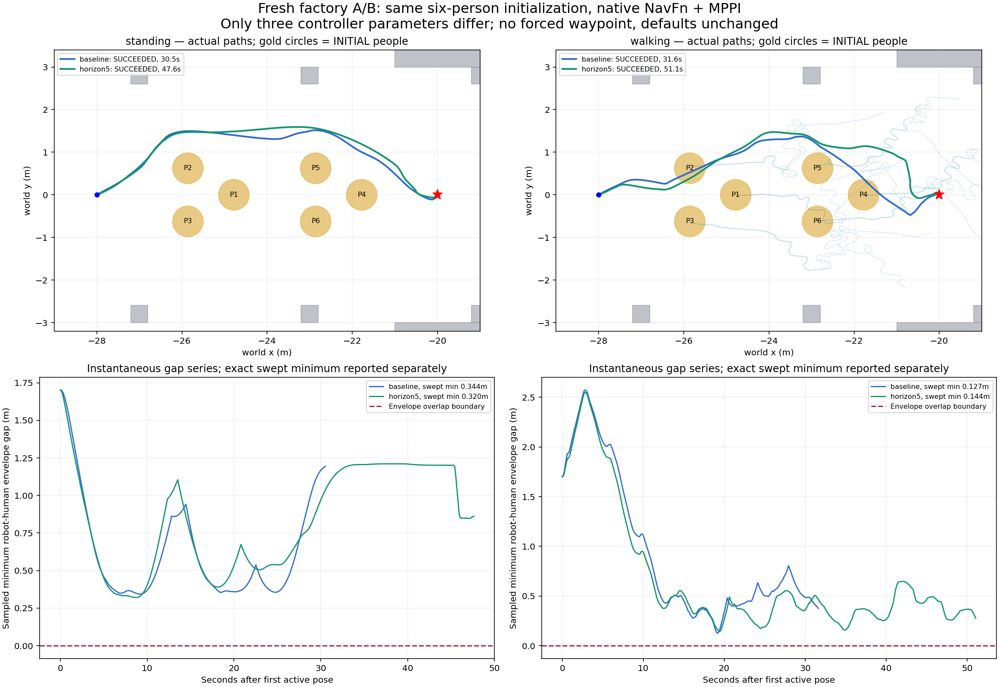
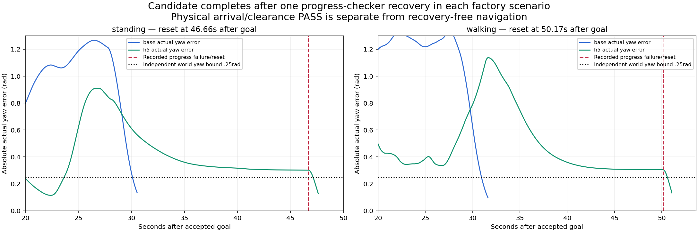
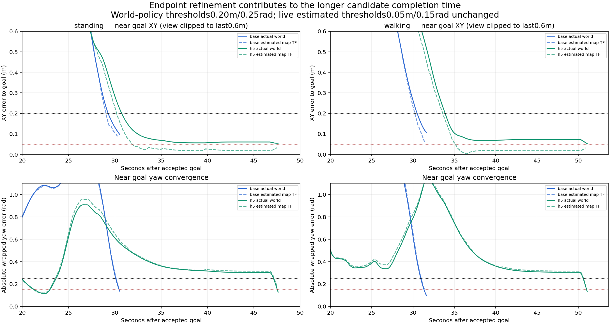
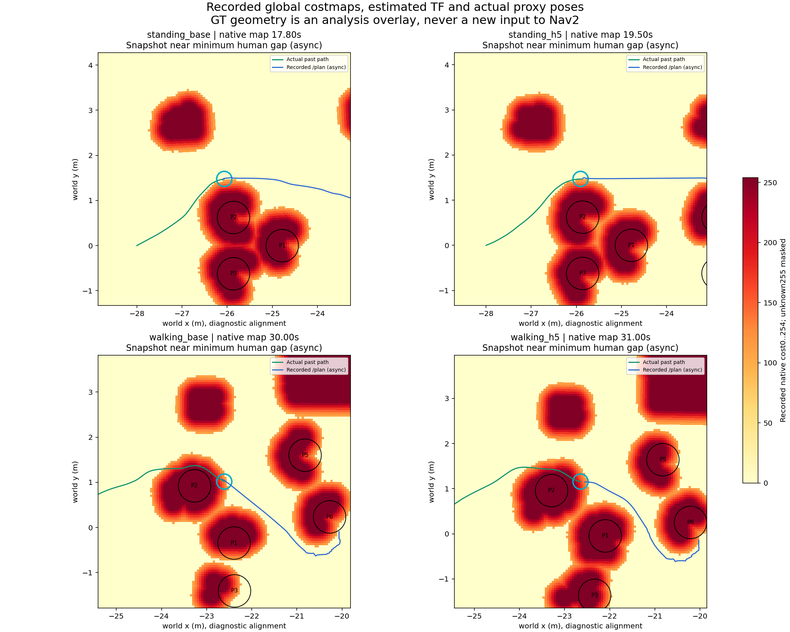

Đã kiểm tra lại nhà xưởng có người
Cả4 lượt tới đích, audit dữ liệu PASS, khoảng hở hình học dương. Tuy nhiên, cả2 lượt horizon5s đều chậm hơn và cần1 lần Nav2 khôi phục gần đích. Chưa áp dụng cấu hình này làm mặc định.
Điểm hồi quy đã xác nhận
Robot mới tới vùng cách đích20cm sau30,7s (đứng trò chuyện) hoặc33,9s (nhóm đi bộ), rồi còn mất khoảng17s để hoàn tất. Log ghi “Failed to make progress”, tiếp theo “Optimizer reset”, xóa local costmap và thử lại. Khoảng0,9–1,0s sau lỗi đó thì goal hoàn thành.
Cấu hình cũ không có lần recovery nào. Vì vậy “tới đích” và “đạt khoảng hở” chưa đủ để kết luận điều hướng đã ổn định. Bước tiếp theo là sửa hội tụ vị trí/hướng gần đích trong cấu hình thử, rồi chạy lại cùng phép đối chiếu.
Bốn lượt mới, cùng khởi tạo
| Cảnh | Cấu hình | Thời gian mô phỏng | Đường đi | Hở tới người, bảo thủ | Sai số đích thật | Recovery |
|---|
| Đứng trò chuyện | Cũ | 30.5s | 9.03m | 34.4cm | 9.8cm | 0 |
| Đứng trò chuyện | Horizon5s | 47.6s | 9.09m | 32.0cm | 5.5cm | 1 |
| Nhóm đi bộ | Cũ | 31.6s | 9.01m | 12.7cm | 10.7cm | 0 |
| Nhóm đi bộ | Horizon5s | 51.1s | 9.25m | 14.4cm | 5.3cm | 1 |
Cấu hình cũ: CostCritic16/140,30 bước×0,05s. Cấu hình mới:3,81/253,100 bước×0,05s. Cùng radius0,17m + padding0,01m, inflation0,45m, cost scale3, tốc độ, map, camera, robot và6 người ban đầu. Backend seed45, noise RNG của MPPI chưa cố định. Người phản ứng theo robot nên quỹ đạo về sau là kết quả tương tác, không phải bản replay giống hệt nhau.
Với hai lượt đứng trò chuyện, không ghi nhận tâm robot nằm trong tam giác của bộ ba loại standing:3052 và4177 phép kiểm tra tam giác. Đây chỉ là một chẩn đoán hình học hẹp, chưa phải nhãn không gian xã hội đã xác thực. Hai lượt walking không có nhóm loại standing để kiểm tra mục này. P1–P6 trên hình là ID tác nhân.
Đường đi thật và khoảng hở

Xanh dương: cấu hình cũ. Xanh lá: horizon5s. Vòng vàng là vị trí người lúc bắt đầu; các nét mờ ở cảnh đi bộ là đường người đã đi, khác nhau do phản ứng với robot. Đường khoảng hở theo từng mẫu; giá trị nhỏ nhất trong bảng dùng phép quét tuyến tính giữa các pose.
Cấu hình mới: hở tới người nhỏ nhất32,0cm trong cảnh standing,14,4cm trong cảnh walking. Không có cờ giảm quá10cm so với baseline, nhưng khoảng hở dương chưa xác nhận sự thoải mái xã hội hay lực tiếp xúc bằng0.
Vì sao thời gian tăng?

Vạch đỏ là thời điểm lỗi progress đã ghi:46,66s và50,17s sau goal. Native log xác nhận reset bộ tối ưu và retry sau đó. Progress checker hiện dùng required_movement_radius0,1m, movement_time_allowance15s, giống ở cảhai cấu hình. Không đổi tiêu chí nghiệm thu để chuyển kết quả thành PASS.
Xem cả sai số vị trí thật và TF ước lượng

Sau lần đầu đi vào bán kính thật20cm: cấu hình cũ còn1,25s/1,12s; horizon5s còn16,88s/17,18s. Khoảng này gồm tinh chỉnh vị trí và hướng, có thể có tái nhập vùng đích; không được coi toàn bộ là thời gian chỉ quay. Giá trị null trong JSON TF nghĩa là không có mẫu phù hợp trong cửa sổ ghi, không chứng minh goal checker bỏ qua tolerance. Chưa ghi điểm từng critic/rollout nên chưa quy nguyên nhân bên trong bộ tối ưu cho một critic duy nhất.
Camera thật của hai lượt mới
Đứng trò chuyện · horizon5s
Nhóm đi bộ · horizon5s
Ảnh RGB từ camera Gazebo đã ghi, một ảnh/giây mô phỏng, mã hóa VP8 có mất mát và giữ thời lượng khung đứng; phát4×. Không có ảnh AI sinh. Cửa sổ Gazebo mở riêng là phát lại XY/yaw đã ghi; dáng đi dựng từ quãng đường, không phải chạy lại Nav2/vật lý.
Video baseline để đối chiếu
Global costmap đã ghi, ở gần thời điểm sát người nhất

Native uint8 0–254; unknown255 được che. Vị trí người thật dùng làm lớp vẽ đối chiếu qua TF, không cấp thêm GT cho Nav2. Snapshot map1Hz và pose/plan có thể lệch thời điểm; ảnh này không thay thế phép quét khoảng hở toàn quỹ đạo.
Phạm vi đã kiểm tra và bước tiếp theo
4/4 lượt capture audit PASS, numeric TF/camera/raw depth và native costmap khớp MCAP. Đối chiếu input/config PASS: cùng khởi tạo, robot/camera/URDF/map/backend, chỉ3 tham số controller thay đổi. Chỉ đường socket tạm của worker được chuẩn hóa khi so XML; raw world không bị sửa.
Không sửa runtime trong lượt kiểm tra này. Bộ unit gần nhất250 tests OK,2 conditional skips; chẩn đoán tam giác có oracle inside/outside và ngưỡng tốc độ riêng. Mỗi lượt h5 có1 cảnh báo vòng điều khiển lúc reset; log được giữ lại. Chưa có force-contact stream, benchmark nhiều seed hoặc nghiệm thu social policy. Human backend vẫn khai báo virtual robot_radius0,25m; vai trò này khác Nav2 radius0,17m và được giữ nguyên ở cảhai nhánh.
Chốt hiện tại: giữ cấu hình đã qua khe ở dạng thử riêng; cấu hình chung chưa đổi. Sửa hội tụ gần đích trước khi xem xét áp dụng chung hoặc đăng ký lượt mới vào bộ dữ liệu chính. Chưa huấn luyện WM/RL/classifier.
Kết luận nghiệm thu · Bốn kết quả và chẩn đoán nhóm · Lỗi progress và log native · Thời gian gần đích · Đối chiếu input và SHA256 · Nguồn camera · Kế hoạch trước khi chạy